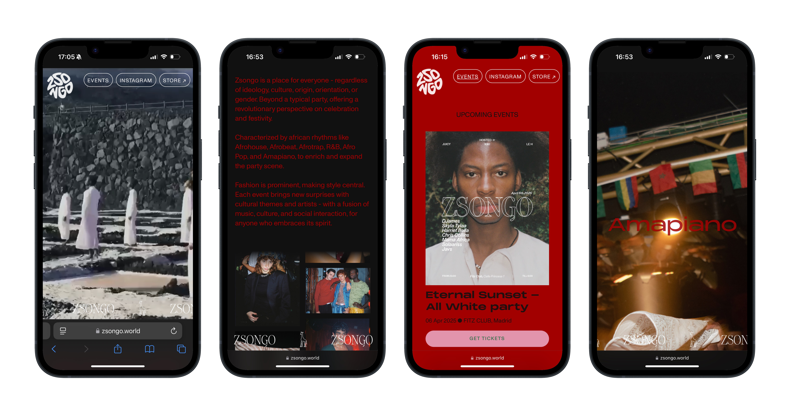
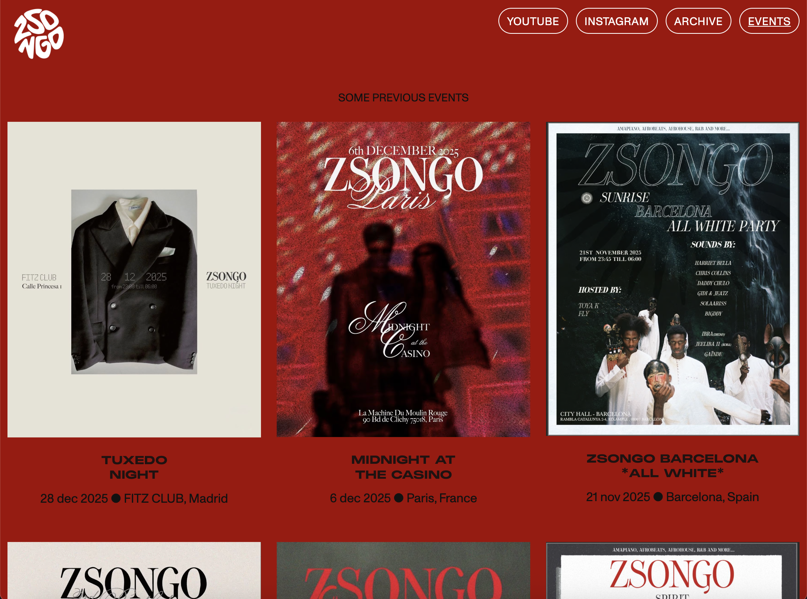

Zsongo Events Website
YEAR: 2024
ORG: Zsongo
ROLE: Web Design & Development
Stockholm, SWE

A web design project bringing Zsongo to life on the web, blending visuals and functionality
Though rooted in Madrid, Zsongo hosts events around the globe and is all about celebrating diversity, culture, and human connection. The goal was to create a site that feels as dynamic and alive as the world it represents. Every element was designed to reflect its essence, making the digital space an extension of Zsongo's creative spirit.

Process
→ Web design and development
Designed and built the website in Webflow, translating Zsongo’s visual identity into a responsive web experience.
→ Visual direction and layout design
Defined the visual structure, typography, spacing, and composition to create a site that feels dynamic, expressive, and aligned with Zsongo’s global, culture-driven events.
→ Motion and visual emphasis
Integrated animated and visuals to add energy and movement while maintaining clarity and usability.
→ Responsive design across devices
Optimised layouts and assets for desktop and mobile to ensure consistency and usability across screen sizes.
→ End-to-end execution
Handled the project from concept to launch within a 5-week timeframe, balancing aesthetics, functionality, and technical constraints.
